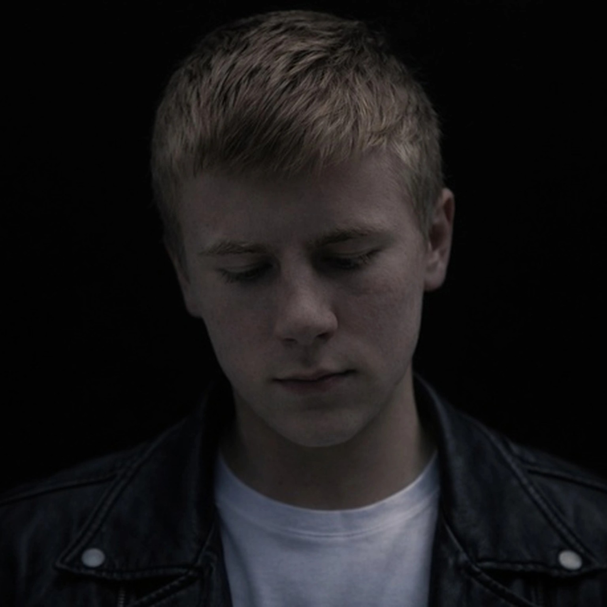

Поп-исполнитель. Музыка о чувствах, которые остаются с тобой.
Новости о релизе и даты будут опубликованы в сообществах. Подпишись на Telegram и VK, чтобы не пропустить.
Семь шагов назад — начинающий певец. Настоящее имя — Степанов Алексей Сергеевич.
Родился 26.07.2005 в Константиновске. Живу в Ростовской области, город Шахты.
Я создаю поп-музыку, в которой важны эмоции, искренность и атмосфера.
Этот проект — способ говорить о чувствах честно и без лишнего шума.
7stepsback.official@gmail.com